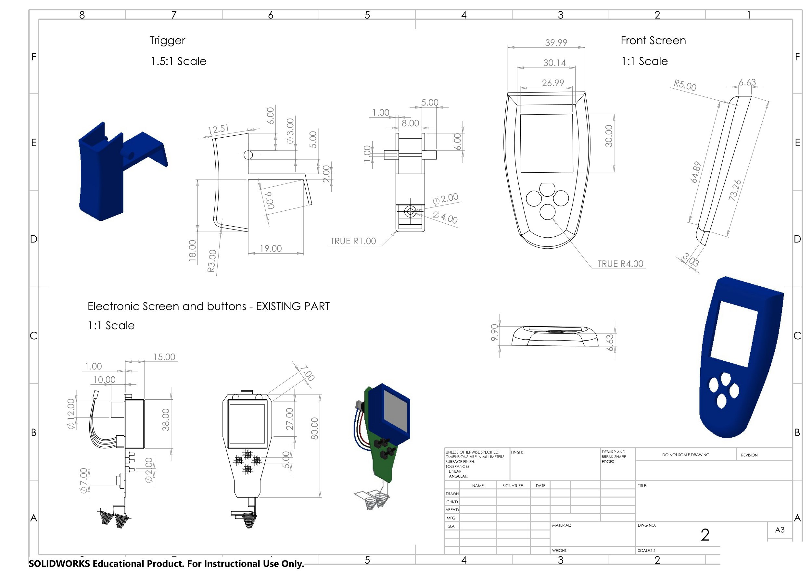
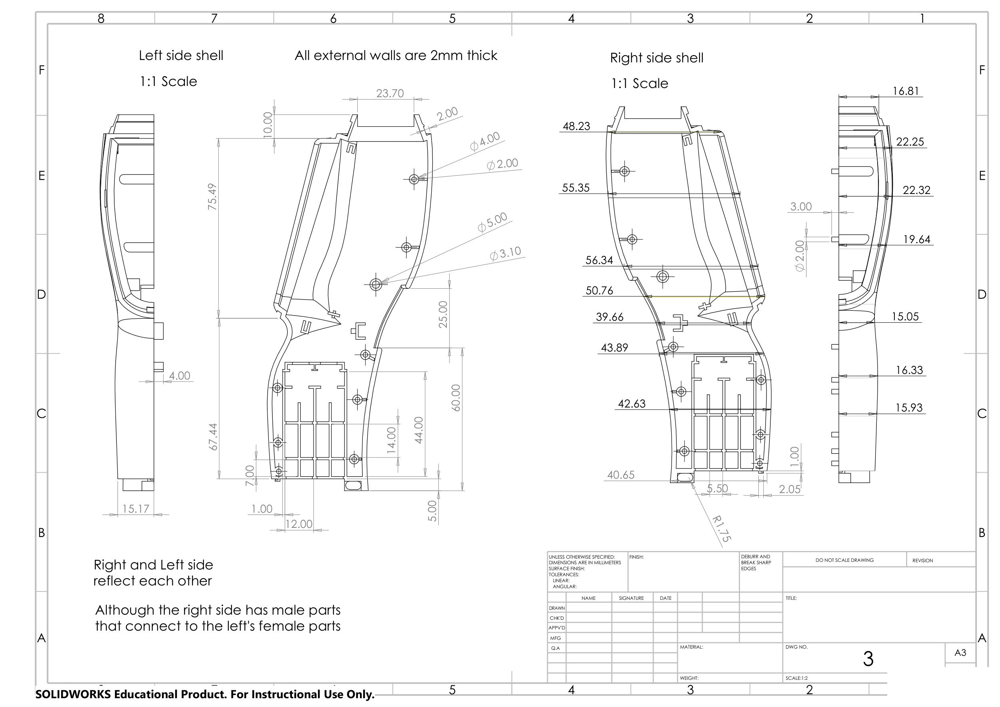
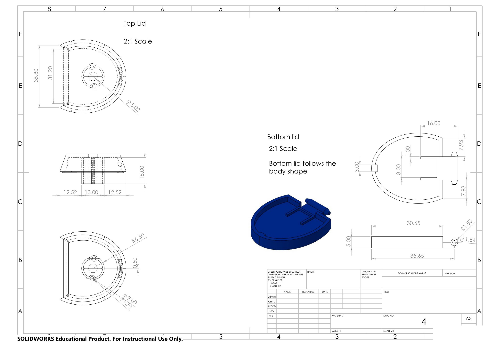
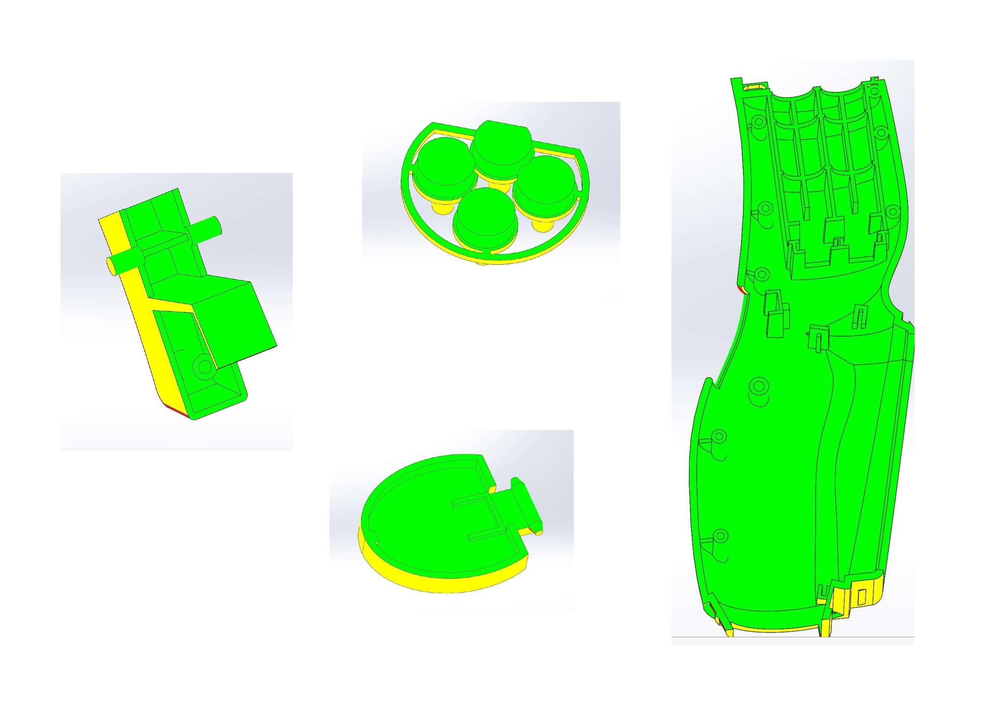
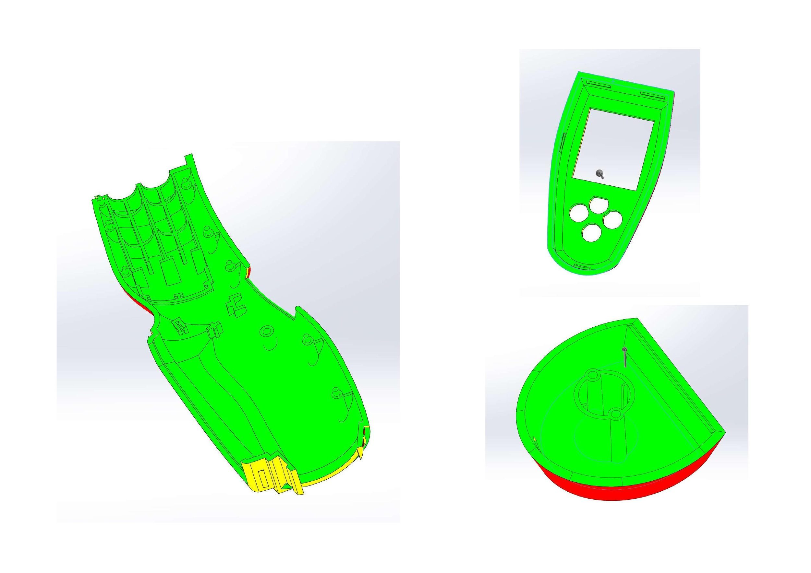

Infrared Thermometer
Redesign
A full enclosure redesign for a handheld infrared thermometer, modelled in SolidWorks around an existing screen and laser module. Seven custom parts — trigger, button extenders, front screen, left and right shells, top cap and bottom lid — built to close around hardware that couldn't be changed.

Overview
The brief was constrained around fixed, existing components: the device's electronic screen and button assembly, and the laser module. Neither could be altered. The design task was to build a complete, ergonomic handheld enclosure around them — trigger, shells and caps — that holds the hardware securely, fits comfortably in the hand, and reads as a cohesive product rather than a box around a part.
The assembly resolves into nine items: seven custom parts plus the two existing modules. External walls were held to a consistent 2mm. The left and right shells mirror each other, with the right side carrying male locating features that mate into female sockets on the left — a detail that keeps the two halves aligned without extra hardware.
Trigger, Front Screen & Buttons
The trigger is a small lever drawn at 1.5:1 to capture the pivot detail and spring seat clearly. The front screen housing sits at the top of the grip, shaped to frame the existing LCD window while keeping a comfortable thumb reach, and a separate set of button extenders carries the four-button cluster through the shell so the existing switches can be pressed from outside.

Sheet 1 of 3 Open PDF ↗
Shells, Cap & Lid
The main body splits into left and right halves that follow the profile of the internal module, with locating bosses and ribs holding the screen assembly and trigger mechanism in place. The top cap closes off the head of the device around the sensor and laser opening; the bottom lid follows the tapered body and closes the grip end, detailed with fine radii for a clean parting line against the shells.

Sheet 2 — Side shells Open PDF ↗

Sheet 3 — Cap & lid Open PDF ↗
Draft Analysis
Although the prototype parts were printed in PLA, each one was modelled to be mould-ready and checked with a draft analysis in SolidWorks — green faces pull cleanly from the tool, so anything flagged was re-angled before the geometry was locked down.
{kind=link}

Trigger, buttons, lid & shell
{kind=link}

Remaining parts